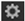

用导航打开主题
使用克隆工具
的
克隆
工具允许您通过使用与指针或指针转换偏移的像素在板上绘制来删除不需要的特征，从而从板或不同的输入中删除不需要的特征。
使用克隆工具
|
|
1。
|
单击
克隆
工具
在 RotoPaint 工具栏中。
|
|
|
2.
|
要查看克隆工具的所有设置，请启用
显示克隆设置

在查看器顶部的 RotoPaint 工具设置中。
|
|
|
3.
|
在 RotoPaint 工具设置中，将 “绘制源” 下拉菜单设置为要从中克隆像素的输入。(有关可用选项的信息，请参见
编辑笔画特定的属性
)。
|
还可以在克隆设置中使用变换控件
转换克隆源并将其重置回原始
重置
按钮。
|
|
4.
|
在工具设置中设置笔触的不透明度、寿命、笔刷类型、大小和硬度。(有关更多信息，请参见
编辑现有笔触/形状属性
和
编辑现有描边/形状计时
)。如果您设置了多个视图，您可以检查
单
视图
框仅在一个视图中克隆，或取消选中该框在所有视图中克隆。
|
|
|
5.
|
要设置克隆偏移，请按住
Ctrl
/
Cmd
然后在源位置单击鼠标左键，拖动到要绘制的位置，然后释放。或者，您可以使用
翻译
RotoPaint 工具设置中的控件。如果您希望将偏移量舍入为整数 (像素的整数)，请检查
圆形
。如果您不想通过部分混合像素来软化图像，四舍五入到像素可能很有用。
|
|
|
6.
|
开始绘画。指针覆盖将偏移的来源描述为一个圆内的十字准线，目标描述为一个圆 (其直径代表笔画的宽度)。
|
你可以使用
/
(正斜杠) 和
*
(星号) 在数字键盘上放大和缩小克隆源，以及
0
(零) 和
.
(小数点) 向右和向左旋转。您也可以使用数字键盘上的数字键来
轻推克隆源。
|
|
7.
|
要重置克隆偏移，可以使用
Ctrl
/
Cmd
+ 拖动以调整之前设置的偏移，或
Ctrl
/
Cmd
+
转变
+ 拖动以从画笔指针的位置开始一个新的偏移。
|
提示:
如果你从当前的盘子中克隆 (
前景
,你也在克隆你以前画的所有笔画/形状。如果您想从原始背景或不同的图片中克隆，您需要设置 “绘制源” 下拉菜单来从该输入中提取。
提示:
要从输入剪辑的另一个帧克隆像素，可以使用
时间偏移
滑块来定义要从中克隆的帧。请参阅
编辑克隆或显示属性
.